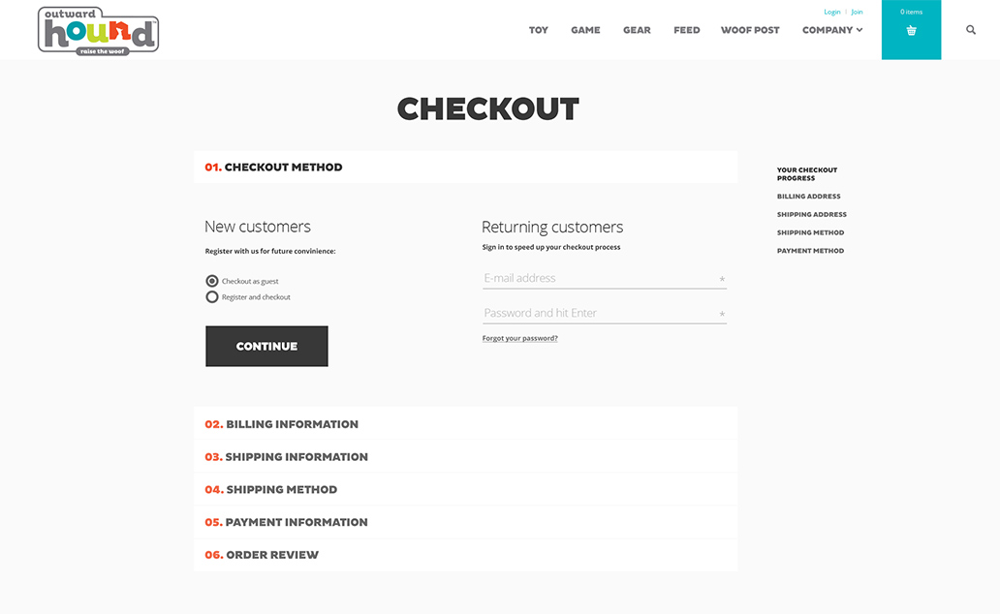

Cart abandonment is an important topic to consider when working on a new eCommerce web product. Often times clients have put a lot of time, effort, and resources into an existing eCommerce website, but consumers are still dropping off at checkout. This is something our digital agency has seen time and time again. Ecommerce research agency Baymard Institute estimates that the average online shopping cart abandonment rate is nearly 70 percent. As consumers increasingly shop online with their mobile devices, brands are struggling to find ways to meet their demand for convenience, immediacy and simplicity. The good news is that a flawless user experience can win them back.
Simplicity is key
Despite the rise of abandoned shopping carts, Business Insider reports that about 63 percent of merchandise can actually be recovered by online retailers. The key is to simplify the checkout process.
A traditional checkout funnel typically consists of at least five steps:
- Checkout
- Shipping
- Billing
- Payment
- Confirmation

With so many steps, it’s easy to see why mobile consumers are getting frustrated. Consumers aren’t abandoning their online shopping carts because of product cost. They just don’t want to fill out tedious and/or time consuming forms. Nearly 40 percent of online shopping cart abandonment is due to lengthy forms prompting consumers to enter shipping and payment information. In fact, four of the top five reasons consumers drop off at checkout are related to entering information.
“The importance of mobile isn’t news anymore. For most brands and marketers, more than half of site visitors are coming from mobile marketers,” said Anthony Nicalo the VP of Platform at Mobify during a recent web payment webinar hosted by Mobify and Google.
Mobile has fractured and fragmented consumer behavior into hundreds of short, fleeting mobile moments. Customer expectations for simplicity and convenience are growing exponentially.
Improve cart abandonment
To prevent online shopping cart abandonment, you need to optimize your checkout process. Make your consumer’s needs, and the devices they frequently use, the centerpiece of your checkout design. Here are a few tips to help you:
- Enable autofill forms. Mobify surveys revealed that 46 percent of online shoppers site checkout speed as the number one factor in whether a consumer returns to a site. The longer a checkout page takes to process a transaction, the more consumers worry an error has occurred. One easy way to speed things up is to enable auto fill forms so consumers don’t have to manually fill in shipping and payment information. Go one step further and offer to save this information for future purchases.
- Keep everything on the checkout page. Offering a discount code? Great. Make the code accessible directly on the checkout page. Consumers won’t need to abandon their cart in search of discount codes posted on the web. Many online retailers are starting to offer a “tap it” option where consumers tap a button at the start of their shopping journey to automatically apply the discount to their online shopping cart.
- Pay attention to visual design. Pay close attention to how color and design affect your consumer. The color red typically flags warnings to consumers, so seeing this color on your checkout page could make them cautious about processing an order.
- Automate follow up. In a study of more than 200 brands across the country, email marketing company SaleCycle reported 46 percent of all abandoned shopping cart emails (follow up emails to consumers who left items in their cart) were opened by recipients. More than a third of email clicks led shoppers back to purchases on the retailer’s website.
Mobile dominates, so can you
In today’s connected world, it’s no secret that mobile is playing a huge role in how consumers shop. The challenge for marketers is to take their online brand experience to the next level. Marketers now must predict the needs of consumers to make brands more compelling. Simplifying the checkout process is a step in the right direction.